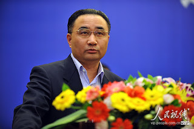

剛剛在《金融時報》（《Financial Times》，詳見http://www.ft.com/intl/cms/s/0/3732a1ba-7c77-11e5-93c6-bba4b4b36134.html#axzz3ponclNoW ）看到一則報導，說中遠集團新任紀檢組長徐愛生公開誇耀自己的征服（“Brags of Conquests”，Conquests一詞在現代頗有諷刺的意味，一般指男性沙文主義者吹噓自己和多少女人上過床，所以我剛讀標題還以爲這個人行爲不檢），仔細讀過才明白他所謂的征服是指劉志軍、廖永遠這些由他主持查辦的貪官。《金融時報》的文章當然語調是悻悻然，我後來到網上找到原文，才明白這篇演講稿是徐愛生訓斥中遠集團紀檢組人員的講話。字裏行間，流露出狷介傲骨，頗值一讀，所以全文轉錄在後。

中遠集團新任紀檢組長、原審計部司長徐愛生
個人的性格差別很大，像這種狷介不苟的個性雖不常見，但是各國都有，真正的差別在於是否能讓他們放手去做。我在《美國式的恐龍法官（三）》裏提到的Preet Bharara也是這樣一個人，他能做到聯邦檢察長而且不受上級或國會掣肘，說明美國的制度是勝過臺灣或印度這樣的三流國家的，但是最終財閥還是經由司法體系把他的權力閹割了。現在徐愛生、李金華和王岐山這些人能一辦就是幾百個案子辦到底，豈不是中國的制度優於美國的明證？
我對”一是死豬不怕開水燙，二是自斷後路，三是全得罪總比不得罪好“這句話特別感動。臺灣政壇提到死豬不怕開水燙，指的都是厚著臉皮違法背信之徒，大陸的死豬顯然要高明多了。我祝普天下所有的徐愛生好運。
=====================================================
今天一是和大家見見面，二是確確實實我對中紀委同志的講課寄予很大的希望，第三我想講一講具體的問題。但是剛才中紀委的同志沒按我的要求講，給我感覺是這一套談話拿到哪大概都合適，令我很失望。聽到中間我到樓上去，拿了一些材料，大家看到我把黨章都拿來了。今天我爭取在12點之前講完，或者也有可能延長一點，大家稍微堅持把它聽完整，好不好？
我是審計出身，但卻幹了二十多年的外貿外事工作。 04年，審計署原審計長李金華把我調過去，迄今為止我幹 了11年的審計工作，做了審計署四個司的司長，其中經歷最長的是投資司司長，最後把我派到這（中遠）來了。這當中（在審計署）查出不少大案子，包括劉志軍，就是我親手把他送進去的。也有其他許多領導人是我發現並送進去的：中石油廖永遠、大唐跳樓的蔡哲夫都是我查的，國家電網副總帥軍慶的問題是我查的，南方電網進去的兩個老總也是我查的。最近五年，我總共查了180多起案件。
劉志軍案件是我在京滬高鐵三年跟踪審計當中發現的。首先發現的是丁書苗，然後發現的老劉。但是我想講的重點不是查案件的問題，根據岐山書記的要求，現在是抓早抓小，把紀律和規矩挺在前面。所以今天想和大家開個會，作為紀檢工作的重點，把紀律規矩停在前面，抓早抓小。其次是查案件。這也是我們今天開會的一個主要內容。
我下面主要講兩點。第一：中遠集團到底存在哪些廉潔風險和作風紀律的問題? 第二、該怎麼做?
談主體責任：中遠、中海合併方案隻字不提黨的領導
第一、黨的意識淡化，黨建工作弱化。我不跟你們講大道理，這是確確實實在中遠集團嚴重存在的，而且是各種紀律問題、違法犯罪問題存在的主要原因。
習近平總書記在聽取26家央企巡視結果報告的講話中，嚴厲指出中央企業黨的領導弱化，主體責任缺失，黨的紀律鬆弛，頂風違紀突出，權力尋租盛行，侵吞國有資產管理監督缺位，違規決策頻繁等突出問題，並特別強調全面從嚴治黨在國企尤為緊迫。這次巡視發現的問題非常多，透過現像看本質，就是黨的領導弱化，全面從嚴治黨沒落實。央企之所以出現如此嚴重的腐敗問題，根本原因是各級黨委、黨組管黨、治黨失之於寬、失之於松、失之於軟。企業黨的建設沒有做到位，思想沒有轉變，重視不夠，行動上抓的不力。主要體現在：一是黨組織機構被弱化，邊緣化；二是強調企業特殊化，有的企業黨委、黨組長期不進行黨風廉政建設，紀檢監察部只是擺設，對違反八項規定的“四風”問題熟視無睹，依然存在公款消費、公款吃喝、公車私用，比闊氣、講排場、奢侈浪費問題嚴重。紀委監督執紀嚴重缺位，有的紀檢部門甚至有要求無動作，有部署無檢查。
我舉個中遠的例子，大家都知道，中遠、中海要合併，一個星期前吧，兩位董事長，帶著我們集團的黨組成員，在一個小賓館開了一個會議，將兩個集團花一個月羅列出的一個所謂合併方案進行匯報。馬澤華（中遠董事長）同志明確指出，當天下午只能聽匯報，不發表意見。我看了這方案以後，當場就想衝著兩位董事長質問。馬書記明確說：“明天上午，兩個集團領導各自開黨組會聽取意見”。很好，咱們講組織，講紀律，現在有要求先不說。第二天，中遠黨組討論方案的時候，我第一個發言，我問馬澤華同志，你和許立榮兩位老總在起草這個方案的時候，有沒有記得你們還有一個身份，黨組書記！記不記得？你給我看的整個方案，通篇沒有一個字來強調深化國企改革當中強化黨的領導的東西。方案裡面隻字不提黨的領導問題，隻字不提黨委、黨組如何加強領導問題，隻字不提黨委、紀檢組如何加強監督的問題，一個字都沒有，這是什麼改革？你們有沒有看過中央剛剛下發的關於在深化國企改革中要加強黨的領導的文件。你身為黨組書記，你是嚴重失責，必須做出檢查。李雲鵬（中遠總經理）跟我講，中遠黨組成員迄今沒有一次黨組會這麼開，敢於公開指責黨組書記。我對他說很簡單，從現在開始常態化。如果有類似問題，這種事還會有，如果問題嚴重，我會立刻向中組部、中紀委反映。我當時就要求馬澤華同志，你必須立行立改，否則我就履行我的監督職責。我說你是否認可我說的這些，馬澤華同志表態，誠懇接受徐組長的批評。我舉這個例子大家明白了嗎？什麼叫做黨的弱化，黨建意識的淡化。身為黨組書記，兩個企業合併的重大國企改革方案當中，居然隻字不提黨的建設、黨的領導、黨的監督。看到了嗎？我今天不給你們講大道理。這是我講的第一個問題，黨的意識淡化，黨的建設弱化在中遠確確實實存在。
第二，管黨、治黨企業可以鬆一點，寬一點，也確實存在。包括在座的，總覺得我們是企業，制度寬一點。上個星期天，我們移送一個案件，檢察院要求調這個企業的會計賬目。就因為這麼一件檢察院履行司法職責的簡單工作，阻力非常大。有黨組成員就跟我講，這還得了啊，我們是企業。就這件事情，我反問，我說你要干涉司法嗎？這點法律知識沒有嗎？檢察院有它的法定程序、司法程序在裡面，我們要干涉嗎？另外，憑什麼查案件當中只能查本人不能查別人？到今天還有這種謬論，還出自我們一位主要負責同志。他說，這是紅旗啊，這還得了啊？我就跟他講，天會塌下來嗎？周永康都被抓了，沒想到他會垮台啊，他是政治局常委，還管公安的呢；兩個軍委副主席被抓起來，沒聽說過中國人民解放軍垮下去啊，有什麼了不起啊。這就是真實發生在我身邊的事情。
高租金船等“四資一項目”重大決策失誤給企業帶來巨大經濟損失和廉潔風險。巡視裡面講得很清楚。大連船務的投資損失加起來幾百億。由於這些重大決策失誤、管理上的失誤、經營上的失誤，差一點使中遠翻船。
高租金船“四資一項目”問題還涉及到一系列犯罪違法問題，目前正在要求各單位，正在追責。我明確告訴你們，你們報上來的東西沒有幾個到位的，絕大部分不合格。下一步我會通知你們，必須追責。有的同志提出來，你們黨組誰追責？我今天以我的黨性告訴你，你追你的責，黨組我來負責，我不跟你們開玩笑，
第三方業務問題。這個比例非常高，我搜了一下巡視組佟組長的講話：第三方業務的比例占我們整個業務的92%，要這麼高嗎？有這個需要嗎？目前出來的數據顯示，總共的經紀人貨代、第三方中介的有21867個，兩萬多人。目前明確禁止的有56家，其中包括集團黨組主要負責同志的妹妹等等，全在禁止之列，現任黨組書記、前任黨組書記都存在，全在這56家禁止之列。這個問題不抓行嗎？你們作為紀委書記你們自己琢磨琢磨，從黨性、從良心，你們琢磨琢磨，該不該抓。這再不抓，中遠還會好嗎？我今天給你們帶個頭，我不怕得罪人。這是我給你們講的，怎麼做紀檢工作。 03年我第一次見李金華審計長，李金華說，我倒希望你到審計署來，中國審計要和世界接軌，後來真去成了。我不是學會計，也不是學審計的，是學國際貿易的。我上班第一天，李審計長給我提了要求，跟我講了三句話，我現在還記得：一是死豬不怕開水燙，二是自斷後路，三是全得罪總比不得罪好 。我做11年審計工作，始終牢記這三句話。大家都知道，劉志軍上躥下跳，大家都知道他有後台，不照樣也進去了嗎？誰來說話？誰敢出來說話？ 10年、11年，兩個審計反映廖永遠違法違規問題，上報中紀委，對廖永遠的懷疑查處就是從那時開始的。
我在查電網的一個案件中，得罪了安全部副部長馬建，他氣勢洶洶地衝著手機說，警告我不能再查，說你所查的人是我們安全部在下面的線人，受我們保護。我毫不客氣地問，請教馬部長，你是老國安嗎？中國哪一條法律規定，你安全部的人員，包括線人，違法不受法律追究。請你告訴我，如果有，你拿出這個證據來，我就立刻收手、收兵不查。我說我審計署就一條，以法律法規為準則。他說沒有，明確告訴我沒有，但是他為了國家安全。我說馬部長，你不愧為省部級幹部，你水平比我高，你講的對，你是為國家安全。我說馬部長，但是你忘了，我也是為了國家安全，我是為了國家的經濟安全。馬部長我明確告訴你，你拿不出法律規定，我照查不誤，隨你便。有的同志包括中紀委的同志告訴我，你別得罪他……半年之後，他進去了。我今天告訴大家，我這個紀檢組長不怕得罪人。清理第三方業務等6項專項整改，每一項都碰到巨大的困難。但我告訴我們的紀檢人員，必須全部做到，誰敢阻攔試試。我再告訴你們為什麼搞6項專項整改。別以為8月12號報告交出去以後就完成任務，萬事大吉了，這是典型的走過場。報告出去了，從宏觀上我們開了多少會議，處理了多少人，但是不是真正按中紀委要求做到事事有著落，件件有結果？沒有。第三方業務如果不查，還會有一批幹部倒下去，中紀委、中央巡視組對這個問題講的非常明白，這是利益輸送的問題，必須斬斷這個利益輸送的鏈條。
打高爾夫的問題，你們聽聽這個數據，最新數據。你們報上來的所有統計數據，13年198人，涉及8個單位，打球118次，費用總支出335萬；14年，83人，6部門打球461次，花費115萬；15年，4個人， 5次打球，費用支出1.68萬。從上面數據看，好啊，在逐年下降。我要提醒的是，八項規定是少一條都不行。
管黨治黨沒有例外，沒有什麼央企例外。總書記在聽央企巡視匯報的時候，立場很清楚，14年打的是典型的不收斂不收手。各級黨組織認真研究，從嚴治一下。你要這麼看，這個數據就嚴重了。 13年14年兩年都打的53人，780次，費用194萬；13、14、15年三年都打的4人。
我在國外常駐了很多年，從未聽說過國外有一個企業，用企業的公款可以吃喝玩、打高爾夫，不可能！就我們共產黨的干部能夠利用管理上的漏洞。你們去打聽打聽，我在外面常駐的時候，也有請別人吃飯，政府部門請吃飯，你要講清楚，徐先生對不起，我是個人掏錢。還有的飯是到家裡請，自己掏錢。我常駐國外有四年，沒碰到過一個用公款請我吃飯的人。有的時候覺得不好意思，算了，不用如此，你到我家簡單也是如此，心意。前段時間網上公佈了一則消息，我看了非常震撼。新西蘭，說實話，新西蘭我去過幾十次了，一個部長很有可能要接下任總理的，就是因為周末要在家裡請客，下班的路上路過一間酒店，他想買兩瓶紅葡萄酒，便於週末在家裡請客吃飯用，進去選好了，付款的時候發現沒帶私人信用卡，只有一張公務卡。公務卡不是讓你買這個東西的，這個不能拿公務支出。他琢磨了一下，最後還是劃了公務卡，支付不到1000新西蘭幣。週一上班，心裡還是有些慌，最後還是報銷了，以買辦公用品報了。過了一段時間，趕上審計。新西蘭審計署發現這個票不對頭，一核不對，買了兩瓶酒。就這麼一件事情，導致嚴重腐敗。你們再想想他要在用公款吃喝，能吃的完嗎？能用公款打高爾夫嗎？
我明確告訴你們，關於公款打高爾夫的處理問題，我跟紀檢部討論無數次，怎麼處理。這裡面有個難題我現在明確告訴你們，有的單位在信上、說明上提出來，中遠集團黨組14年9月9日才在大調度會上公開宣布不允許用公款打高爾夫。因為在此之前確實，我們黨組領導同志，包括黨組、紀檢組的同志都講過，商務是可以打的。你們誰負責？有的同志說，你們現在查我，那老黨紀說的，有些單位現在明確提出來。我不能說你們單位的話提出的錯，沒錯。確確實實，這也是事實。所以，鑑於考慮到這個因素，我們黨組、紀檢組的部分同志，我告訴你們，如何處理這些人，我費盡心思。有一點可以告訴大家，今年巡視整改公告，你們看到最後一條畫面了嗎？ 6項整改結束後，針對專項整改中發現的問題，開好民主生活會，深挖思想根源，健全制度規範。我今天告訴大家，這是中紀委某位領導寫的，不是我寫的。也就是說，這個事情，包括6項整改當中黨組層面發現的問題，我會在黨組民主生活會上明確點名講出來，黨組民主生活會中組部、中紀委、國資委都會派人來。難道我們黨組的同志不要負這個責嗎？
經我核查，在公款打高爾夫的問題上，黨組、紀檢工作組是認識不到位的，導致中遠公款打高爾夫的盛行。用習總書記的話，14年以後仍然用公款打高爾夫屬於典型的不收斂、不收手，黨組要認真研究，嚴肅處理。如果按總書記的這個話，你們看要處理多少人？但是你們下面有反映：不買賬，不是我的責任，你們黨組決定的事。我已經查實，也確實有這個事情。但是馬書記跟我講，沒有答應過公開打高爾夫。那麼我說，所謂商務打高爾夫是個什麼概念？您能給我解釋嗎？這是你們自己說的嘛。中遠的風氣，中遠公款打高爾夫，其惡劣程度，已經讓總書記都知道了。我們巡視組組長在匯報中遠打高爾夫的時候，講到林鐵升13年、14年繼續打。林鐵升14年1到9月份用公款打高爾夫的金額超過13年的整年。就在這個時候總書記插了話，就是我剛剛講的。
那一天我陪馬書記去國資委強衛東書記那裡匯報，強書記怒火萬丈，公開指責馬書記，你們不是跟我幾次報告說公款打高爾夫解決了嗎，沒有了嗎！你們的前任組長宋大偉不是跟我報告解決了嗎，沒有了嗎！怎麼會這樣！給我解釋清楚，不用說謊！連總書記都知道你們打高爾夫，搞的都出名了，什麼叫都解決了！今天我把這些話告訴各位紀委書記，讓我們清醒地認識到中遠目前的狀況。一個公款打高爾夫的問題如此嚴重，現在什麼形勢？到現在有的思想還是沒有整到位，還是認為我們是陪外國人，境外應該鬆一點、寬一點。我還是那句話，你是什麼年代？有沒有腦子？有沒有看到外國人公款請你打球的，有沒有這個事情，有這個事情嗎？你舉個我聽聽。沒有腦子啊。
公款旅遊的問題。我就不再讀巡視組發現的問題，我講講最近通報的中遠空運的問題。今天中遠空運的紀委書記來了嗎？全系統通報，昨天中紀委網站也通報，登出來了。在這裡很典型的一個例子，什麼形勢？這個當中，最讓我難以接受的就是你是黨委書記兼紀委書記。該給我們的紀委書記豎豎規矩了。
我到了中遠出了一次差，跟馬書記、前任組長宋大偉同志到上海。那天傍晚到，吃完中飯走的，到那去跟我們巡視組組長匯報整改第一稿。那次匯報很不成功，等於是退回來了，說虛的太多、空的太多、假的太多，大話太多，回來重改，具體我就不說了。我發現一個細節問題，我剛進門，坐到遠洋賓館，房間的桌子上紅酒、水果、乾果一大堆。紅酒搞的很專業，上邊還裹著餐巾布，杯子，一打開就喝，有的人告訴我這是習慣。我當時很不高興，說全部給我撤掉，以後不能重犯，再有一次，我對你們總經理、黨委書記包括紀委書記追責。吃飯，菜準備好了，涼菜擺上，6個涼菜吧，是吧，我說全部給我撤掉。吃飯，我們是6個人，很簡單。我說如果你們不吃，我走，我是上海人，上海出生長大。你們的遠洋賓館周邊走路不到五分鐘就是我出生長大的地方。我說你們不吃我走，我到外面去吃碗餛飩就夠了。上海就有個特點，小吃很多，涼菜全撤，我們最後每人定了一碗餛飩湯麵，後來炒了兩個菜，一個是青菜，一個是南瓜炒山藥粉，另外一個涼菜，我買單。我要告訴大家，我不是作秀，這是規矩，請這一單開始，這就是規矩。以後任何人出差，包括集團領導人，再敢用這種招待，我追責，我通報，不信你試試。
所謂跟國際接軌，難道就是喝紅酒、打高爾夫、陪夫人公款吃喝玩樂？這就是跟國際接軌？動動腦子啊，你們有沒有真正學到國外管理上的精華，就看到這個表面的東西，開會帶夫人，出差帶夫人，公款打高爾夫。你就打70多洞有什麼了不起啊，能喝點紅酒又能怎麼了，非要去搞那些表面上的東西有什麼用？顯得你很紳士是不是，很懂行？能不能學點內在的東西。我告訴你，你去學日本人的管理，中國人學不回來。中散老是連年虧損，說是有客觀原因，對，我不否認有客觀原因，但是日本人的散運為什麼到現在掙錢？研究過嗎？有沒有去研究？這麼困難的情境下，同樣面臨世界這麼惡劣的經濟形勢，它為什麼能掙錢，你為什麼就不能掙。研究過嗎？
執行退休政策不嚴格問題。可能覺得很可笑，這也成了問題了。我告訴大家很嚴重。巡視報告也都看了，今年上半年，中組部幹部監督局也專門調研過，有很大的問題：到齡不退的問題。巡視組也明確提出這個問題，我今天告訴大家，就這麼一個簡單的問題，執行不了，改不了。我們再仔細分析一下，到齡不退休什麼身份，全是領導幹部。我從來沒看到一個普通員工到齡可以耗著不退休，沒有。那麼我請問，為什麼，憑什麼？我們中層以下的干部，有人公開跟我講，你當紀檢組長必須告訴你的紀檢組員，執法執紀必須平衡，一碗水端平。我就說有人執紀執法，有人不執紀執法。儘管語言很不客氣，但我很感激這位同志。為什麼你的領導幹部就能到齡不退?
中組部今年上半年調查完以後，給了中遠一個報告，其中關於到齡不退問題是這麼寫的：到齡不退問題，儘管表面上有各種各樣的理由，但其實質就是多拿幾個月工資的問題。我到了中遠我才明白，原來我聽說過，你們在職的工資和退休的工資差的是很大的。所以中組部講的很明確，不就是多拿幾個月工資嘛。表面上會有這樣那樣的冠冕堂皇的理由，實質就是多拿幾個月工資。我總結的這話多難聽啊，為了幾個月的工資，置組織原則、管理制度於不顧。黨組紀檢組正在就這個問題進行專項整改。目前有6個人，黨組、咱們中遠人事部、組織部不給具體的到齡退休時間。前天我急了，毫不客氣中遠集團黨組、中遠集團組織部關於到齡退休整改問題不整改，為什麼不整改到位，我如實報告。在這種情況下，昨天下午反饋回來，12月底前辦完退休手續。我還是那句話，為什麼領導幹部可以因為這樣那樣的原因可以不退，為什麼，憑什麼。中組部、中紀委巡視的時候講的很清楚，一刀切，嚴格執行到齡退休制度，憑什麼可以例外？為什麼我現在強調，岐山書記講，要抓早抓小，把紀律和規矩挺在前面。你們聽聽這些事情，不抓行嗎？中遠普通員工服不服？能服嗎？這麼簡單的問題，按規章辦事就做不到，就是不行。你有沒有黨的規章的意識啊，有沒有黨的紀律？黨的六大紀律的工作紀律學沒學。黨組帶頭不執行，還能管誰去？所以你想想為什麼有的員工要發牢騷，要罵街。有的同志講，從公平角度講，我們對中遠毫無信心。為什麼有這種感受？你們作為紀委書記自己琢磨琢磨。
領導人員親屬在系統內從業。這也是中組部、巡視組提出的重要問題。我目前核查出來的是，各級領導人員親屬，有158名子女、配偶、親戚在本系統內從業，發現4個手續不齊全。這個要實事求是，合理合法的，考試考進來的，程序合規的，無話可講。但一定要實行迴避，至少夫婦兩人別在一個單位。我們也查了集團領導王宇航的夫人在哪個單位，我們也看了，重點查了她的手續，確實合規。目前唯一改的比較徹底的，讓我滿意的就是這個。也不能說夫婦兩在一個單位就是錯，只要程序合法，手續沒有任何其他違規、違紀的現象，我也不會說反對的。但是要迴避，不能說老公當領導，給老公做手下，那不行。
第一，強化黨的監督和領導。我把批評馬書記的內容讀給大家聽，而且當時是黨組（擴大）會，相關部門的領導及中金等相關單位全在，黨組會我照說不誤。
就強化黨的監督，我今天帶來了這個。一個憲法、一個黨章。為什麼?審計必須依法審計，依靠《憲法》、《審計法》；黨章，則是每一位黨員的行為規範。每一位司長辦公室都有兩面旗子：黨旗、國旗。我一到我的辦公室，看到有國旗、中遠旗。我就跟我的秘書講，我要一個黨旗和國旗，要了一個星期沒要來，我問總經辦怎麼答复，他們說旗不好買，買不著。我當時大怒，共產黨的天下，買不到共產黨的旗子，胡扯。我給了司機400塊錢，我的司機花了不到半小時買到了。我拿著旗子去找李雲鵬同志。李雲鵬還專門跟我解釋了，他到總經理辦公室把他們批評了一頓。這個故事說明什麼事情，黨的意識淡化、弱化到什麼地步。我跟李雲鵬講，你問問你的總經理辦公室，共產黨天下買不了黨旗什麼概念。
第二、管黨、治黨沒有特殊。剛才那位同志也講了。中紀委網上7月28日登了一篇文章，我給大家讀一遍，題目“管黨治黨沒有特殊”。 “黨領導下的國有企業和金融機構是以公有製為主體的經濟基礎的重要體現，決不能因為是市場主體，是上市公司，就只強調企業的經濟屬性、市場屬性，而把黨的領導放在一邊，忘記黨性原則和政治立場。從嚴治黨，國企不能例外。要喚醒國企黨員幹部的黨章黨規黨紀意識，同樣把紀律和規矩挺在前面，一把尺子量到底。“一把尺子量到底”這是岐山講的。他這裡強調的是黨章黨規黨紀的事。 “黨章規定：'黨的紀律是黨的各級組織和全體黨員必須遵守的行為規則。'但是，很多國企負責人覺得自己有特殊性，認為國企領導是不是可以同其他黨政幹部區別對待，辦公室能大一點，坐的車子能好一些？有的說，因為業務需要，是不是能夠在落實中央八項規定精神上有所變通，可以公款宴請、打高爾夫球、持會員卡？甚至有人提出，企業要講經濟效益、展現活力，能不能在管黨治黨、黨風廉政建設上鬆一點，給企業黨組織的主體責任和監督責任單獨出個規定，列一個清單。諸如此類論調不絕於耳，實際上就是'國有企業特殊論'。”“企業的行業、領域有差異，但管黨治黨不能有特殊。
第三，抓早抓 小，把紀律規矩挺在前面。紀律是管黨治黨的尺子，全面從嚴治黨，國企也不能例外。目前黨組、黨委、紀檢工作者尤其要牢牢盯住重點提到的，集團內部出現的公款打高爾夫球、公款旅遊、公款吃喝、違規用人、不嚴格實行退休制度問題。抓早抓小，發現一起必須盡快匯報，嚴肅處理。如果再有發現公款打高爾夫球、公款旅遊、公款吃喝、違規用人、不嚴格執行退休制度問題，嚴肅處理。
第四，全力做好巡視整改工作。巡視整改在中遠分三個階段，第一個階段已經過去，就是通報。現在正在進行第二個階段，6個專項整改。這6項整改之後，還要幹兩件事情：第一，綜合這6項，系統內通報。第二，從集團黨組開始到二級、三級公司黨委全部開民主生活會，轉述中紀委相關領導的批示，根據專項整改發現的問題，查找思想根源，規範制度建設。這個我們到時候會發專門通知。第三，十一月下旬開始，巡視整改回頭看。
我今天就講這些，考慮到上一個人沒有按照我的意思講，所以補充了一些內容。我今天所講的內容希望大家認真考慮，思考，大家回去跟黨委書記、總經理匯報。讓我看到對不起了，我不會鬆手，也不會放手。
112 条留言
美国总统欧巴马(Barack Obama) 年薪约 1,254万 8,000元。
Keats-long
2015-10-28 00:00
>>在美国跟法学院教授聊，他很难理解为何中国的政治家在没有什么制约机制的情况下还有不少勤勤恳恳想做事做好事的人。
是啊，讀聖賢書，所學何事；這樣的傳統是中國獨有的，就算已被壓縮爲少數，有了明主還是能挖掘出來任事。
最近台湾有一本翻译新书叫做＂世界帝国两千年＂，探讨了世界史上各大帝国的兴衰与统治，其中当然也谈到了中国的大一统。
http://www.books.com.tw/products/0010690278 书中的观点并不新鲜，很多探讨中国的着作中也有提到。
西方有天赋人权的观念，中国则有天命的观念：政府失德，人民有权起义推翻政权。当然中国也是人类史上最早有农民起义传统的文化。
任何的帝国想要长治久安，就必须解决统治阶级与基层的矛盾。罗马帝国赋予服兵役的非罗马人公民权，就与现代美国和部分欧洲国家赋予参军的外籍人士公民权相近。
而上面的着作中则提到了，除了科举赋予阶级流动性以外，中国歷史上一直使用土地改革作为压制贵族和国家统一的有效手段，并且提高了农民的积极性与生產力。战国时代秦国就以商鞅变法承认农民土地私有而称霸群雄。
这也可以从文化上解释为什么中国的官僚也会有以天下为己任的情怀。中国的歷史就是农民的歷史，得（农）民心则得天下。
这里要特别提到一点，在有关于印度的报导与研究当中，值得注意的是印度的高种姓菁英阶级虽然也有天下为公的使命感，希望改善底层百姓的生活，但却没有多少印度精英想要改变种姓制度的文化。
百度有个黑色诱惑1983的网友有常住印度农村的经验，他对当地种姓制度有些独特的评价：
＂在印度，有虐待动物（低种姓）人士，也有爱护动物组织。＂＂农民失去依附的地主会沦落为贱民，在没有外力入侵的情况下种姓制度非常稳固＂
離題了。
Keats-long
2015-10-29 00:00
谈到台湾监察院长，我倒想起了去年看过的一期《丽文正经话》，节目里大谈习近平打贪反腐的一系列成果。当然一些嘉宾也免不了揶揄一下“习皇帝”的显赫权柄和霹雳手段怕造成独裁暴政，或者造成中共分裂云云。倒是郭正亮客观的分析习近平处理手段高超，一方面取得了很好的成果，另一方面在中共党内同贪腐份子进行了很好的切割。最后主持人郑丽文放出一个资讯“马英九建立廉政署几年下来一个贪官都没逮住”。后来我在想难道台湾政府一个贪官都没有了吗？显然不是，前朝陈水扁政府就是前车之鉴了。再后来看先生的文章，这件事大概就是先生的那个结论吧----台湾的劣质民主已经将政府的正常职能彻底阉割了!
馬英九無能的程度真是世界一大奇觀。
90年代的台湾还是一日中天, 李登辉政府非常的自信对大陆采取强硬态度. 而江泽民则采取温柔政策提出《发展两岸关系、推进中国和平统一进程》的八项主张. 其中主要几点包括:
離題了。
梓没有看懂我的发言, 我所说的主要有两点; 第一习的作为有人杯葛, 我直说就是江. 第二习的强势有必要, 但他不是没有缺点. 另外我也不同意中国一向以来是以德治国; 那只是标榜. 秦汉是严刑竣法, 三国只有权术和杀戮是中国歷史上人口最少的时代, 魏晋是世族垄断和阶级管制, 唐是开明, 五代更是军国主义. 只有北宋差堪仁治. 明清两代到中叶以后根本就是士大夫集团掌控了国家的命运, 而此辈只讲私人利益.
我早就講過，除了基本的生活水準之外，人類衹有兩個普世價值：公平和自由。蘇聯的解體主要在於官員成了特權階級，引起百姓的反感；我想習近平必然是把它當做前車之鑒的。
这里我有一些疑问想要请教大陆的网友; 徐爱生的讲话里批露的是在中远公款私用以及浪费奢侈在中央三令五申之下还是存在, 为甚么这样? 还有这种情形会是普遍现像吗? 我其实想问的是;目前习进平真的掌控了全国最高的权力吗? 因为对这一点我个人是存疑的.
習近平律己甚嚴，在要求黨幹犧牲奉獻上也以己度人，所以調薪的確力道不夠。
下有对策我自己都干过怎么会不了解? 至于jk123假设的百分之一, 我希望我能相信这是真的. 但是亡党亡国却是胡跟习自己讲出来的; 所谓崩塌式贪腐和窝案也是见诸大陆报章媒体的.
有關九月閲兵，幾個中將都是乘車的。
我所谓 "不就一点钱的事" 当然不是指薄熙来和周永康以及系统性犯罪者对国家的深度破坏. 而说的是的一般贪污官员的犯行, 这其中也不包括那些没本事既贪且蠢的官员.
有關反貪配套政策的問題，我同意應該是賞罰皆用的；不過在初期一概從嚴辦理有示範性的必要，以免造成一般民衆的困惑。此外，你所不滿的“不就一點錢的事”，真正的限制來自法律本身沒有彈性的特質，如果要搞法治就必須接受法治不完美的地方。
jeffchang
2015-11-05 00:00
主权纠纷论我不是太同意，直接证据是1954年赫鲁晓夫刚即位不久访华时就主动归还了旅顺军港，当时苏联军方还不同意，伏罗希洛夫甚至认为好不容易收复了日俄战争中失去的利益，为何要拱手交出去，但拗不过赫鲁晓夫。（在这之前中国曾一度不想苏军撤出旅顺，因为当时中国海军十分弱小，向东的海防压力很大）。
你分析得很好。
我通常不太看对学者的访谈; 一则因为自己的程度不够, 一则此辈多好谈艰深理论所以看不懂. 但郑永年的评论我却觉得论证清晰, 有话直说从不绕圈子, 很容易看得懂的. 此人应该是学识渊博又不作违心之言; 是个真学者. 下面这篇访文里他谈了很多问题, 尤其是对大陆改革和反腐的一系列分析我觉得都很精辟. 但他似乎对于目前中共进入改革深水区后的执行方面隐隐然透露着不安.
据郑的观察; 中共自大规模反腐以来已有了副作用; 譬如官员人人自危, 怨怼, 士气不振, 怠政. 而百姓对打贪先是叫好但后来却没看到打击贪腐带来的好处, 已然有了不满. 郑担心如果这种情况蔓延下去, 那凡事即使高层设计的再好, 底层执行不力终会事与愿违. 虽然他也提到高薪养廉并不是唯一的办法查弊的制度也要建立, 但他也认为官员的待遇还是应该合理. 无如以中共目前的财政还做不到新加坡那一步, 所以郑也是书空咄咄. 而这些问题可能习和他的班底们也是想来头疼. 那怎么办呢? 所以我同意郑的说法; 政治是既要斗争也必须妥协. 习近平打贪到现在就应该明确画出底线, 既要打击也应该安抚. 不要弄到像郑所担心的; 官员队伍里好的人才都跑光了.
http://www.ftchinese.com/story/001065137?full=y 我一直也覺得順應人性、高薪養廉才是長久之道。不過習近平許多政策都異常地高明，不應該會想不到這一點。或許實際執行起來，有旁觀者看不到的難處。
昨晚看完了人民的名义最后一集, 想起前一个礼拜在观察者网上的一篇文章, 说到这部剧也有时下大陆连续剧的通病; 即灌水拉长集数以盈利. 这让我觉得好笑. 因为在我认为, 他所谓灌水那部分正是必要的铺陈以带出本剧政令宣传的重点 (习近平讲的那些话和中央反腐的决心). 这位作者或许会被请去喝咖啡吧? 而观网的水平在我看来也有每况愈下的趋势.
灌水似乎是普遍的抱怨，觀網只是照抄網絡上的意見。
crztrader
2017-09-22 00:00
----这阵子有谣传将恢復党主席制----
并不是沒有可能，但是還輪不到臺商來討論。
crztrader
2017-09-22 00:00
还有一种猜测是19大会对统一做出明确指示。郭正亮也在电视上对此表达他的担心。但台湾媒体似乎漠不关心，股市对此类可能的变局已经麻痹，没有一点风声。
臺灣的政治決策，已經有如一個完全失智的老人，在家裏隨處喫喝拉灑，就等著魂歸西天。
开弓没有回头箭, 习近平的整改如果十年不够, 以他强烈的使命感那当然会想办法继续发挥个人的影响力. 然而党主席在中共的党史上近乎是个独裁的位置, 那在现今大陆改革开放的氛围下, 恐怕不好走回头路. 所以我想二十大之后, 习顶多保留军委主席.
好了，這些事由個人或極少數人決定，無法從統計觀點的大趨勢來判斷，所以這裏大家都只能胡猜，沒有什麽意義。
77 Massachusetts Ave.
2017-10-04 00:00
"我在28嵗之前，拼着做物理，也不是为了赚钱。最后离开，还是被迫无奈的选择。"
做實驗的，沒有搞出玄學的危險。不過這個引力波對人類社會來説，也就只是滿足了一點好奇心，完全沒有任何實際貢獻。
一位基层教育局长的耿直讲话火了：抓应试教育有错吗？
几个节选的观点：作为乡村教育工作者，我们面对的，大多是农村的孩子，他们需要通过学习改变命运，那么抓应试教育，有错吗？
我们不要糊弄下一代，这个社会是分层的，每个阶层的生活品质是不一样的。
在农村，如果不下大力气抓教学质量，这些农村孩子就可能被耽误掉。趁着他们还年轻，让他们埋头苦学吧，用勤奋努力来弥补他们在教育资源上的先天不足，弥补家境条件所伴生的各种劣势。
https://mp.weixin.qq.com/s/jjzms6EYyrrODNEeek839Q 发在这里也是有感而发吧，在当今这番讲话算是“政治不正确”了。先不谈什么观念上的差异，这位官员真是为民所想，同“自断后路的狷介清官 ”一样值得尊敬！
文长，慎入！
是的，只有直面問題，才有可能解決問題。
加油人生
而且這不是臺灣一家的問題，所有直選議員和基層官員的亞非國家再加上美國和南歐（如意大利）都很明顯，是體制本身的毛病，北歐反而是例外。
2018-02-01 07:27 回复
zjtzlhlhs
2018-03-24 07:50
就我的感觉而言，牺牲自己的利益还相对容易，但牺牲家人尤其是后代的利益还是还是会多出很多的犹豫（虽然也是广义的私利）。我和我的很多朋友其实自身对于物质的要求都不高（甚至对过于“逐利”有本能的反感），基本够用就可以。但一旦想到下一代就无法做到那么洒脱了，总觉得自己还是有责任尽量提供更好的条件。也是颇有无奈。
我覺得新竹清華，至少在當年，也是臺灣的大學中，最不重功利的一個。
你最後的那個觀察，我的答案是：不是直接的，但是有間接的影響。到2014年，習近平的反腐已經初有成效，我覺得中共體制的唯一主要問題被正視而解決了，反觀臺灣的政治和社會生態卻是一蹶不振、每下愈況，這個巨大的反差才讓我決定出面普度衆生脫離苦海（指佛家以智慧拯救無知群衆的本意，不是現代的迷信口號）。
2018-03-27 03:45 回复